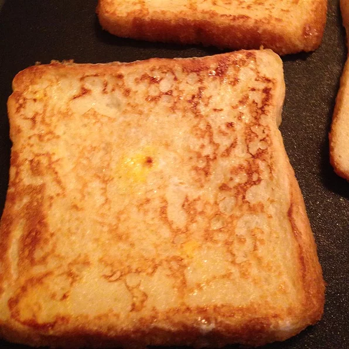

French Toast

Description
This recipe is for French toast
Ingredients
- 6 thick slices bread
- 2 eggs
- 2/3 cup milk
- 1/4 tsp ground cinnamon
- 1/4 tsp ground nutmeg
- 1 tsp vanilla extract
- salt to taste
Steps
- Beat together egg, milk, salt, desired spices and vanilla
- Heat a lightly oiled griddle or skillet over medium-high heat.
- Dunk each slice of bread in egg mixture, soaking both sides. Place in pan,
and cook on both sides until golden. Serve hot